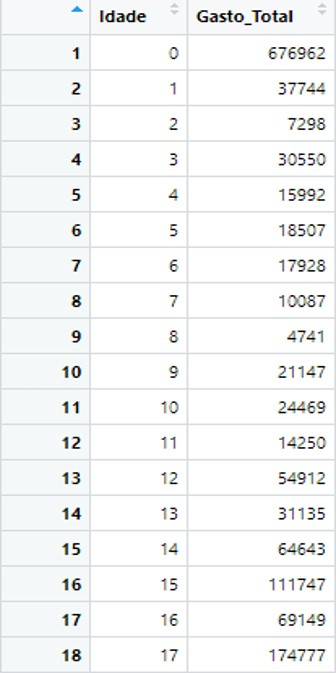
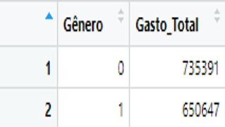
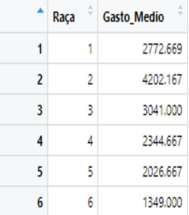
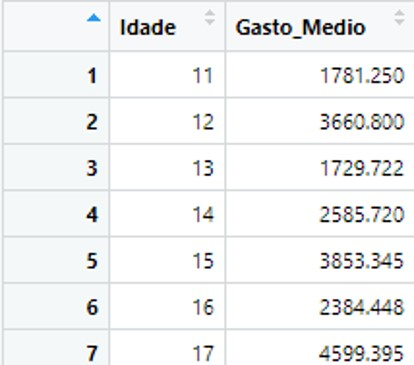
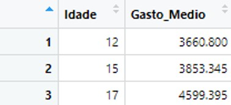

🏥 Insights de Negócio: Custos Hospitalares
A análise estratégica de custos hospitalares cruza dados demográficos com financeiros para identificar oportunidades de otimização de recursos.
💵 Gasto Total por Idade (AGE)
O gráfico abaixo mostra o custo total acumulado de todas as internações para cada idade na amostra.

- Qual o gasto total com internações hospitalares por idade?
- R: Somatório detalhado no gráfico.
- Qual idade gera o maior gasto total?
- R: 0 anos (Recém-nascidos), com um gasto acumulado de 678.118,00 dólares.
⚧ Gasto por Gênero (FEMALE)
- Qual o gasto total com internações hospitalares por gêneros?
- R: Masculino 681.045,00 dólares vs Feminino 674.582,00 dólares.

Insight: Embora as frequências sejam próximas, pacientes do gênero Masculino geram um custo total ligeiramente superior na amostra analisada.
👥 Gasto Médio por Raça (RACE)
- Qual o gasto médio com internações hospitalares por raça do paciente?
- R: A raça 1 possui um gasto médio de 2.710,48 dólares. A raça 6 possui o gasto médio mais elevado: 3.640,00 dólares.

📉 Filtros Estratégicos (Análise > 10 Anos)
- Para pacientes acima de 10 anos, qual a média de gastos total?
- R: 2.977,29 dólares.
- Qual idade (acima de 10 anos) tem média de gastos superior a 3000?
- R: As idades de 12 e 17 anos.

